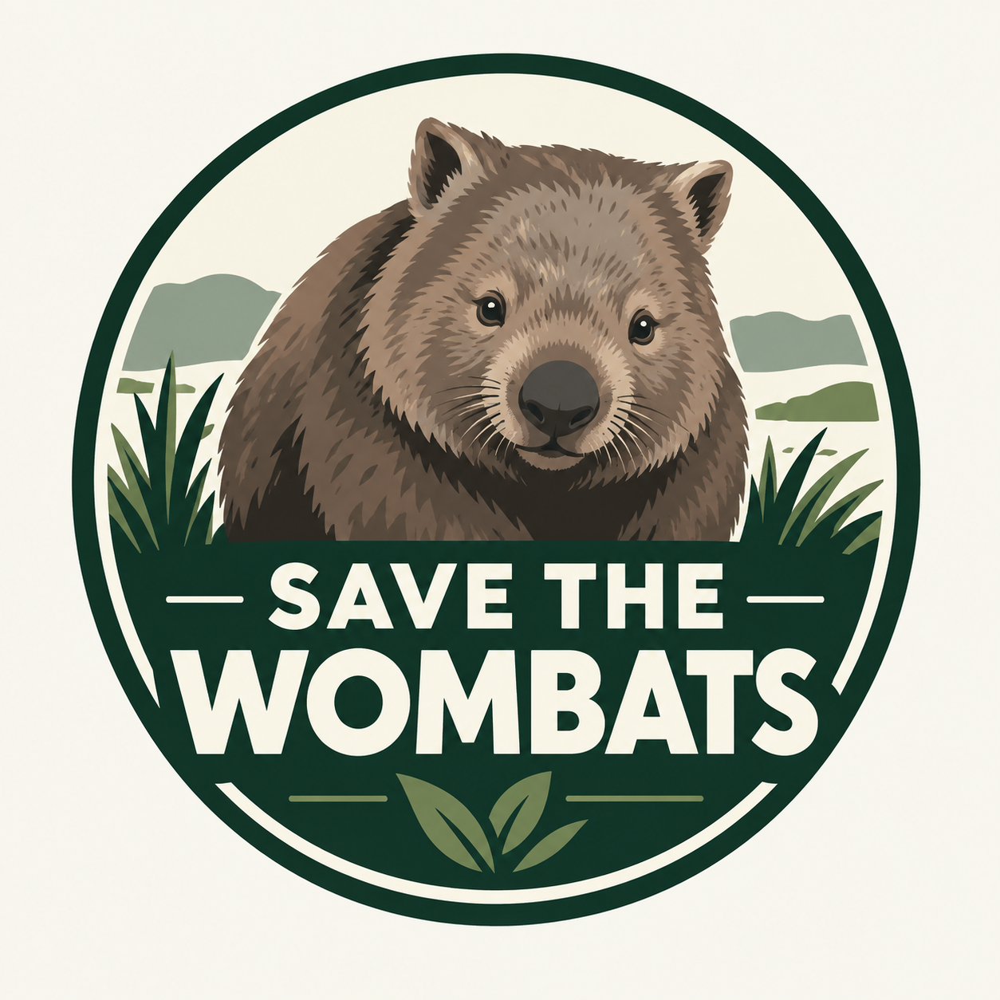
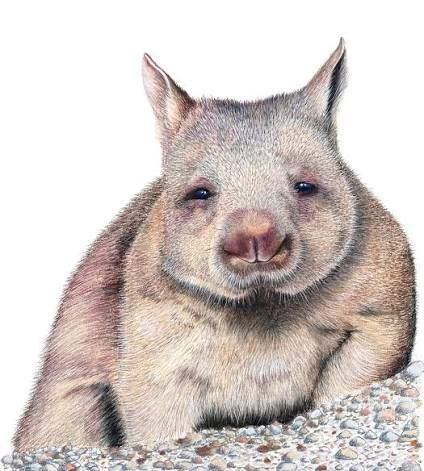
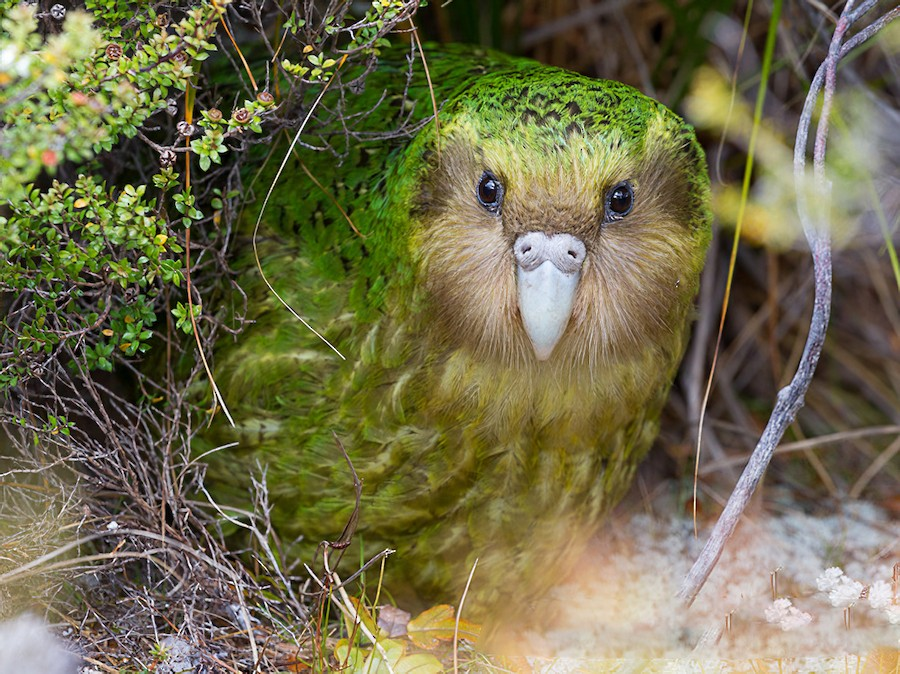

A very reasonable course of action is to continue the creation of new conservation sites and the expansion of 3 existing ones
This will ensure a steady increase of Northern Hairy Nosed Wombats without overpopulating existing areas
In the begining wombats may need to be captively breeded to ensure a high birth rate with careful selection to prevent inbreeding
Over time as the number of sites and their size expand this will not be necessary, if their is a low gentic diversity at one site wombats would be treasnlocated from other
Careful planning and construction is necessary, sites need to be fenced of to protect keep out invasive predetors and competing grazing animals
The locations also need to have a suitable soil type and be at lower risk of flooding or drought
Overall this strategy is very likely to considerably increase the population of Norhtern Hairy Nosed Wombats and delisting them from endangerment

New Zealand too has had to deal with native species that were critically endangered by human activity
Namely in the case of the Kākāpō, a flightless bird that was defenseless against feral cats and stoats introduced by humans and even against rats
They had to be evacuated to island sanctuaries where cats and stoats where eradicated
So rather than caging the Wombats off at a couple of sites there presence needs to be re-established in their former territory
The Federal and Queensland state governmetns will have to step in to eradicate both grazing livestock and invasive buffel grass
Wild dog and cat popualtion will also need to be greatly reduced and controlled
Finally wetlands and swamps will need to be revitalised to improve soil quality and reduce the risk of flooding
This strategy is very costly but promising, it will make Northern Hairy Nosed Wombats far more populous, gentically diverse and resilient
Not restricted to a number of sites they will become a common sight in parts of Queensland and yield major benefits on the ecosystems with their burrow networks
